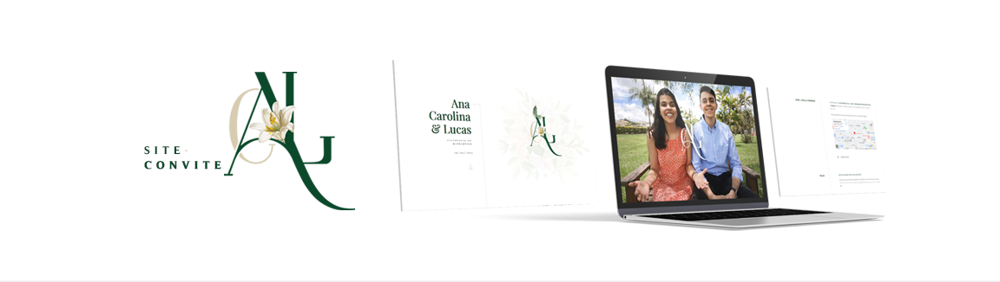

Site-Convite | AC&L
Este foi o convite que criei para o meu casamento! O chamei de "site-convite", pois me utilizei da estrutura de um site para colocar todas as informações referente ao evento. A ideia deste formato digital surgiu quando consideramos a facilidade de compartilhamento e a facilidade de as pessoas conseguirem acessar o convite pelo próprio celular, por exemplo.
Através dos botões abaixo você poderá ver o site-convite completo e ainda realizar o download de todos os arquivos do site, que disponibilizo para que você possa personalizar e criar seu próprio site-convite. Caso você não saiba trabalhar com estes tipos de arquivos ou não tenha contratado um profissional para isso, eu posso te ajudar com essa customização!
Controle Financeiro Pessoal
Este é um controle financeiro pessoal muito simples e útil, que utilizo desde os meus 15 anos de idade. Sua função é simples: permitir que você realize os lançamentos dos seus gastos e possa ter uma visão global do impacto destes gastos no decorrer dos meses. Com isso você saberá o quanto você ainda tem para gastar e o quão perto (ou longe) você está daquele objetivo que traçou.
Parar 1 vez por semana e gastar 5~10 minutos com esta planilha muito me ajudou e ainda me ajuda. Faça o download da planilha através do botão abaixo. Espero que te ajude também!